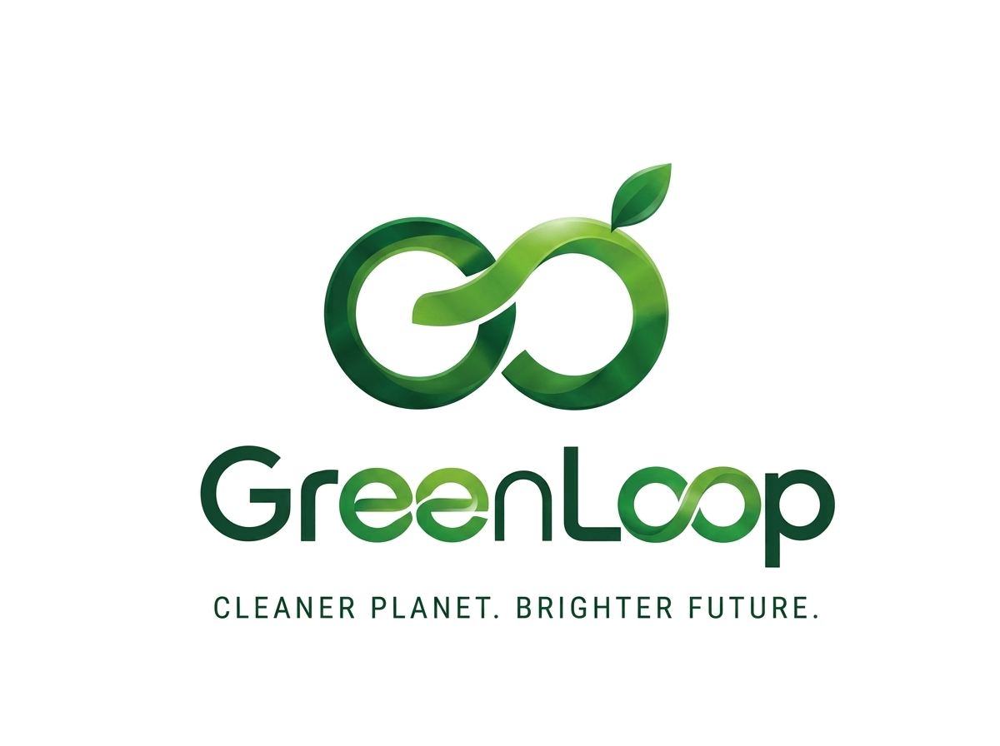
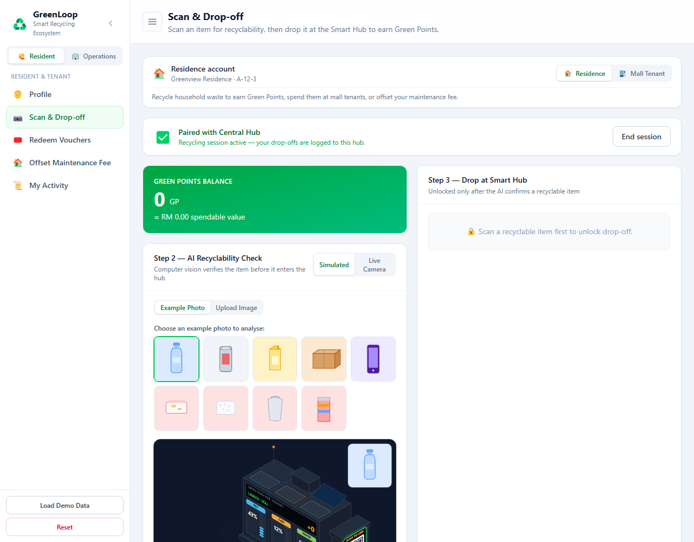
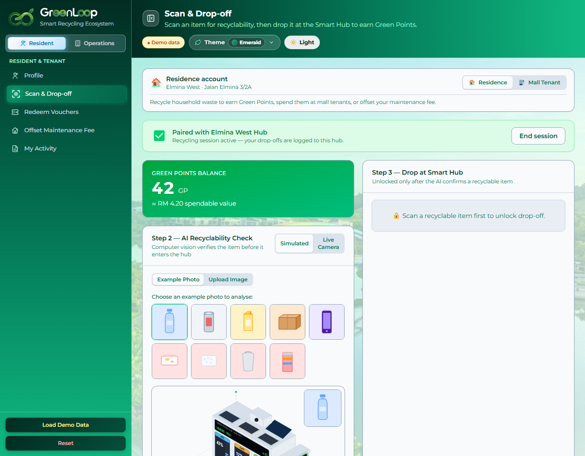
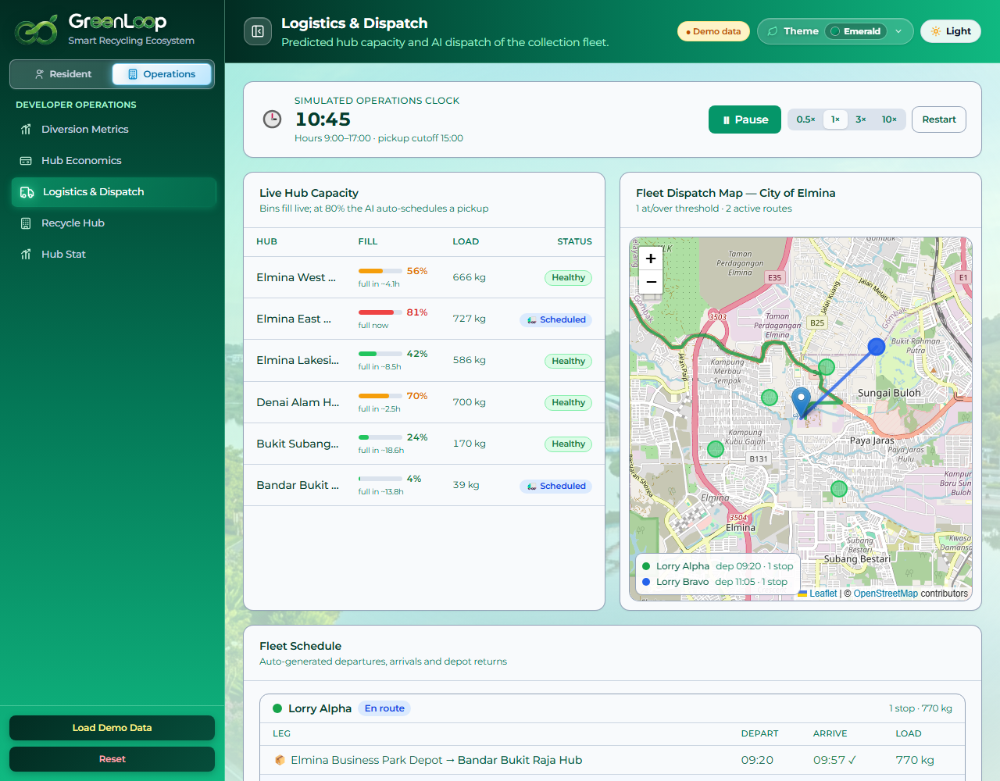
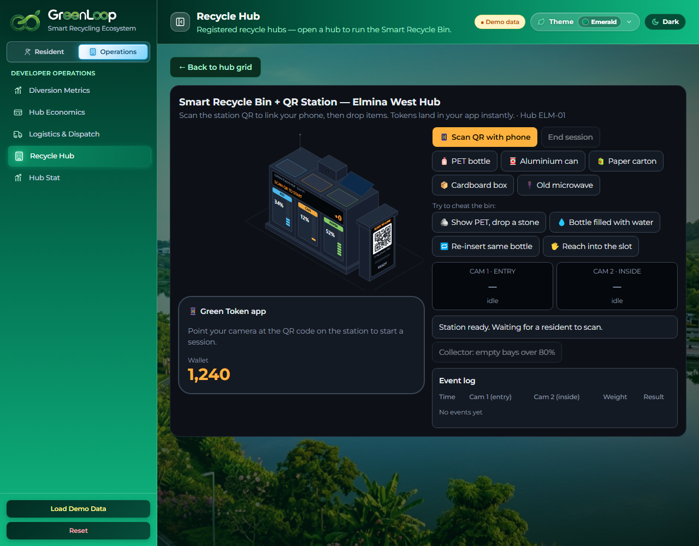
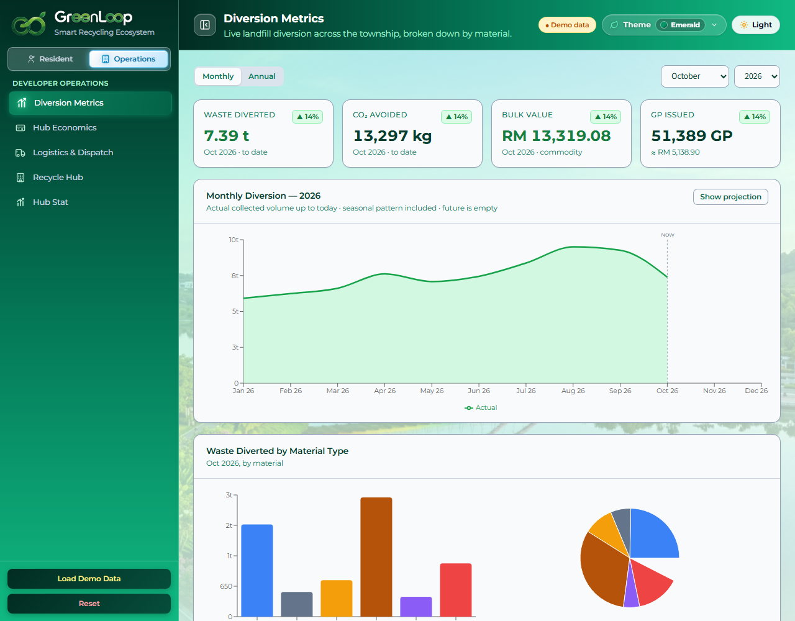
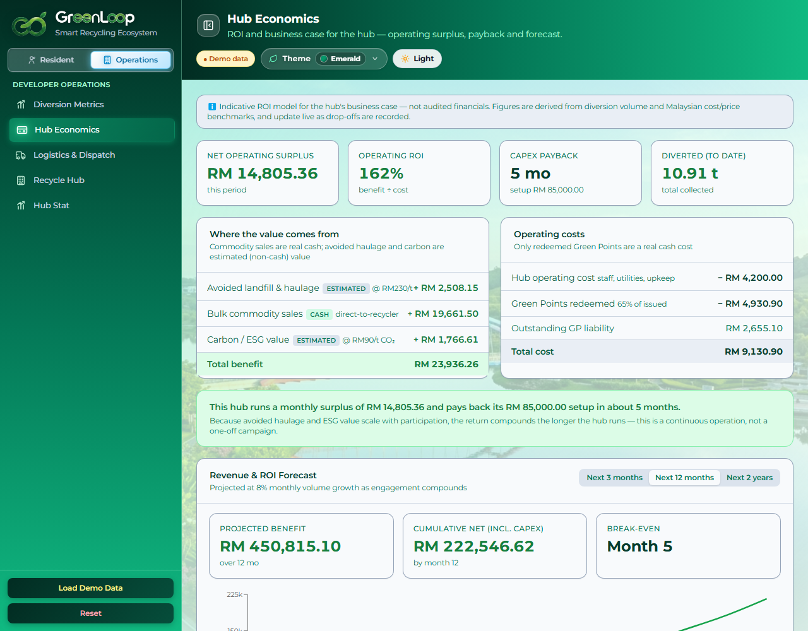

Smart Recycling Ecosystem · recycling that pays for itself

Households that want convenient recycling and an everyday reward for taking part.
F&B / retail (e.g. Elmina Lakeside Mall) wanting to offset monthly service charges from packaging waste.
Sime Darby Property wants visibility, lower haulage cost and measurable ESG outcomes.



Tonnes diverted from landfill; CO₂e avoided; directly supports the national 40% recycling target.
Residents earn GP; GP offsets maintenance fees; higher, sustained participation over time.
Lower haulage cost, live hub & fleet visibility, a self-funding programme, not a subsidy.
Working AI scan, GP economy, live dispatch, 6-hub map.
~10.9 t/month diverted and an operating surplus.
Bin hardware, real haulage cost, recycler & carbon prices.
| Monthly economics (indicative) | RM |
|---|---|
| + Material sales (cash) | 19,662 |
| + Avoided haulage | 2,508 |
| + Carbon / ESG value | 1,767 |
| Total benefit | 23,936 |
| − Operating cost | 4,200 |
| − Green Points redeemed | 4,931 |
| Total cost | 9,131 |
Smart Hub + bin hardware; link rewards and resident sign-up.
Track diversion, participation and real cost vs the model.
Compare actuals to assumptions; confirm payback.
Roll out to Elmina East, Denai Alam, Elmina Lakeside Mall.



GreenLoop connects AI-assisted recycling, resident rewards and smarter collection into one township ecosystem, tackling both participation and the cost of collection, not just one.
We built a deployed, interactive prototype and a one-hub pilot model for Elmina West, and we're transparent about what is demonstrated vs what still needs real-world validation.
Our ask: a one-hub pilot at Elmina West plus access to operational data, so we can measure actual diversion, collection savings and payback before scaling.
Recycling that pays for itself, for the township of tomorrow.